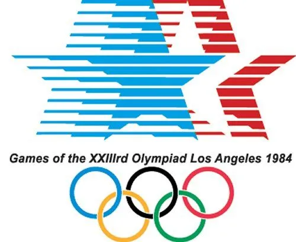
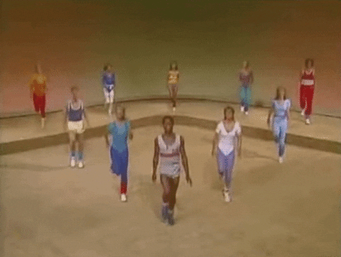

La place du sport dans les années 80 :
Alors que le monde vivait encore sous deux blocs en pleine guerre froide au sein d’un contexte international tendu, le sport réunissait les nations sous tensions, les spectateurs mais aussi les sportifs lors d’événement internationaux, qui pendant un cours instant faisait oublier le contexte géopolitique difficile de cette décennie et réunissait les nations ensembles.
Ainsi le sport occupe une belle place et est de plus en plus accessible sur les écrans des familles à la maison, le suivi sportif à la télé en direct ou même les cours de gym ont réellement pris davantage d’importance et de place au sein de la société.
Finalement, une nouvelle mode se dessine.
Le sport prend réellement racine comme un divertissement à part entière dans l'inconscient collectif des personnes.
Des disciplines comme la pratique de la musculation en salle par le grand public prennent beaucoup d'importance (surtout au États-Unis)